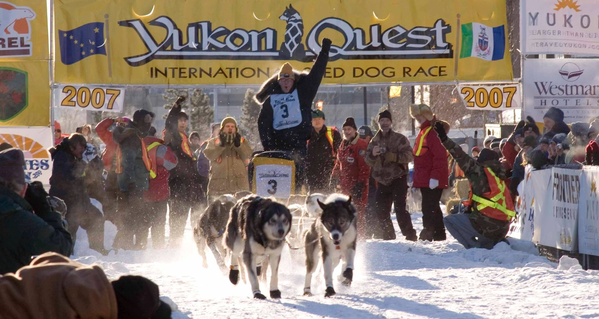
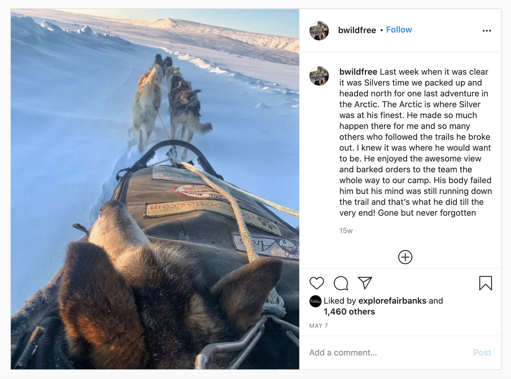

Yukon Quest champ Brent Sass' legendary leader Silver 'gone but never forgotten'
By Laura Stickells | May 26, 2020
Silver (left) in lead at the start of the 2007 Yukon Quest in Whitehorse, Yukon. Photo courtesy of Brent Sass.
For most dog mushers, the question, “Who’s your favorite dog?” is about a stone’s throw from asking, “Who’s your favorite child?” You’ll almost always get an answer along the lines of, “They’re all special.”
But for Brent Sass, a champion long-distance dog driver from Eureka, the answer will likely always be Silver.
“That dog got special treatment from the day that I got him at 5 weeks old,” Sass said over the phone last Monday, remembering his loyal friend of 18 years, who died three weeks ago while on a trip to the Arctic.
“When we were doing recreational trips when he was younger, I didn’t even know what a dog jacket was, but I would get somewhere deep into the White Mountains and I would be taking my sweater off and putting my sweater on him. All the other dogs I was like, ‘Oh they’re fine, they’ve got good fur,’ but Silver got a sweater off my back.”
Silver ended up in Sass’ hands by chance in 2002 when Sass, a then 22-year old recent graduate of the University of Alaska Fairbanks, was out on a skijoring run when he was passed by his neighbor on a dog sled.
Immediately, Sass knew he wanted to ditch the skis for a sled and followed his neighbor back to his small recreational kennel. Sass was instructed to come back in a couple of weeks, and when he followed through, he was given a 5-week-old Alaskan husky with no racing pedigree. He named him Silver.
“Silver was the only dog I had for a while so we just created an ultimate bond and he did everything with me. Before he was a sled dog, he was my best buddy. He was riding around in my truck and I was in my 20s, I had just been in Alaska for a few years and he was like my companion.”
Looking back, it’s hard for Sass to imagine what his life would be like had he not followed his neighbor that day. There’s likely a few others who feel the same way. The puppy grew into a legend, rescuing multiple mushers from treacherous conditions, even saving a few lives.
“He changed the direction of my life,” Sass, now 40, said. “The amount of impact he’s had, I just can’t imagine it without him.”
A natural leader
When Sass first started the sport, he had no intention of racing competitively but instead planned to use dog mushing as a way to explore the most remote areas of the state. Over the next couple years he picked up dogs here and there, putting together a team big enough to head north to hunt caribou, fish and explore the Arctic. Silver was always in lead, where he excelled.
Silver had grown to be 80 pounds and was the picture-perfect image of a classic old-school Alaskan husky. He had golden eyes, big pointy ears and white face markings on an otherwise sleek gray coat. He had the brains of the breed too — no matter the conditions, he would march forward.
“I didn’t know anything about sled dogs, but I knew this dog could break trails in 2 or 3 feet of snow without any problem and look back and be smiling,” Sass said. “Not every dog had that capability.”
And beyond being able to bulldoze happily through snow drifts, Silver had exceptional instincts, which, in open country with no trail to follow, is of particular importance.
“We could communicate where I could turn him just a little bit here or there or steer him right next to a running river or right next to a cliff and run right next to it for a while. I could do some amazing things because I had such great trust in him.”
That trust grew when Silver would blatantly disobey Sass’ gees and haws, the commands mushers use to direct their teams right and left, because it was always for good reason.
“There've been many times where I’ve been like, ‘No, go gee gee gee!’ and he just refuses and continues to go haw and then I’ll look over and I just didn’t see a huge hole or a drop off.” Even in whiteout conditions when Sass had access to a GPS, he’d trust Silver to find the way back to the tent. He would get the team back faster and easier 99% of the time.
Saving lives
In 2006, after three years of exploring Alaska and putting together a small kennel, Sass, looking for a bit of a challenge, entered his first race: the Yukon Quest 300, which starts on the same day as the Yukon Quest 1,000 Mile International Sled Dog Race and follows the same first 300 miles of trail.
The Quest alternates starting and finishing between Fairbanks and Whitehorse, Yukon, annually with even years indicating a Fairbanks start. For YQ300 mushers, a Fairbanks start is widely considered the more difficult direction as it includes two steep ascents, Rosebud and Eagle Summit, both followed by steep drops.
Sass and his team, led of course by Silver, had worked their way to the front of the YQ300 mushers, mixing in with the tail end of the 1,000-mile mushers, who always start first.
When they reached Eagle Summit, a nasty storm was blowing in. Most of the 1,000-mile mushers opted to camp out, but a young and inexperienced Sass chose to power through. Although looking back, it was not the wisest most, it was a stroke of luck for Randy Chappel, who had become separated from his team a few miles ahead.
The storm had blown over the race’s trail, leaving no clear direction as to how to reach Central, the next checkpoint about 20 miles away. Sass took Chappel on his sled and for the next 10 hours Silver broke a trail, completely different from the one marked by the race, all the way to Central.
“This was all before trackers, so people had no idea what was going on,” Sass recalled. “There were like eight missing mushers and all this stuff and here comes Silver out of the storm.”
The missing mushers who had camped out were rescued by helicopter and Sass, the only musher to successfully make it to Central before the storm, went on to win his first race.
The heroic act was the first of many for Silver, who continued to run the full 1,000-mile Quest with Sass each year following and helped a handful of teams over Eagle Summit. Silver’s last run in 2011 was no exception.
The husky was leading Sass’ team through a violent windstorm on American Summit, just outside of the community of Eagle, when they came upon Hans Gatt huddled in a sleeping bag in the middle of the trail and nearing hypothermia. Gatt’s dogs had refused to break trail through the wind and Gatt tried to break the trail himself before giving up.
Sass knew he had to act fast. He clipped his trusty companion in single lead, loaded Gatt into the sled, and attached Gatt’s team to the back of his own sled. Silver found the way.
“It’s basically where if you turn too far to the left you’re going to fall down into the cliff into the bottom of this valley and there’s a mountain to your right,” Sass said, describing the eight-mile stretch across American Summit.
“He saved someone's life in my opinion. It was all Silver.”
Sass’ “opinion” was viewed more as fact by the race officials. At the 2011 finish banquet, the race honored the dog with the Silver Legacy Award, which would be presented in future years only when a dog had performed astoundingly or done a heroic act. But no dog has won it since.
“Silver was a one-of-a-kind dog and maybe no one gets that award again,” Sass said. “We’ll see.”
Coach Silver
Even when Silver wasn’t performing heroics or helping mushers over the Quest’s most treacherous obstacles, he was still teaching lessons.
In 2007 during Sass’s first year running the full 1,000-mile race, Silver was hurt and had to be dropped at the first checkpoint.
“I was bawling my eyes out,” Sass said. Until then, he had always depended on him in lead.
“I didn’t know how to continue and I finally mustered up the energy to get out of there and get down the trail and rely on the other dogs on the team. And that was one of the biggest lessons he ever taught me was don’t always rely on one dog.”
Since then, Sass put more effort into breeding other dependable dogs that have smaller builds, common in modern long-distance racing dogs. Eighty-five percent of his current 50-dog kennel is related to Silver, and after his retirement from running, Silver became “the grandfather of the kennel” and was looked up to by the other dogs as a “king.”
“There are 50 dogs here,” he said, referring to his kennel in Eureka he calls Wild and Free, “and there are some strong heads.
“Even at 17, Silver was walking through the middle of the yard through this craziness and could back a dog off of his food and eat the food and continue on,” Sass said with clear admiration.
Not only did he get to eat whoever’s food he wanted, he also got whatever he wanted. Wild and Free has a handful of dog handlers, and one was always designated only to Silver to make sure he got whatever he wanted, including hand-fed food.
Silver spent most of his final years on the couch, but he would also wander through the dog yard and in and out of the cabin as he pleased — his handler was always there to hold the door. Sometimes he’d run behind Sass’ sled when he went out on a run with other dogs. In his later days he would wait diligently outside until he returned.
“Up until he passed three weeks ago, he was still waiting when I’d come in from a run and would go up and down the team just as a coach would. He was very involved.”
While the dog was enjoying his retirement years wandering the kennel, Sass started to succeed competitively with Silver’s children and grandchildren, winning Quests in 2015, 2019 and 2020. He also placed fourth in this year’s Iditarod, which was his fifth attempt at the race.
“This year was my most successful year. We won our second Quest in a row and third Quest in all, and we had our best finish at the Iditarod, and I think he was like, ‘Well alright man, you’re all set.’”
When it was clear Silver was reaching his final days, Sass packed him up along with a small team of other dogs and took him up to the Arctic, where they spent every summer between racing seasons adventuring. Even in his last years when he could no longer run, he’d sit in the sled and just enjoy the ride.
On May 7, Sass posted a photo of Silver on the Wild and Free Instagram page. The dog was looking off into the distance as he was sitting in a sled pulled by a team of dogs in the Arctic. The caption read:
“Last week when it was clear it was Silver's time, we packed up and headed north for one last adventure in the Arctic. The Arctic is where Silver was at his finest. He made so much happen there for me and so many others who followed the trails he broke out. I knew it was where he would want to be. He enjoyed the awesome view and barked orders to the team the whole way to our camp. His body failed him, but his mind was still running down the trail and that’s what he did till the very end! Gone but never forgotten”
